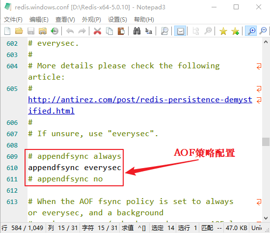

Redis AOF持久化详解（含配置策略）
AOF 被称为追加模式，或日志模式，是 Redis 提供的另一种持久化策略，它能够存储 Redis 服务器已经执行过的的命令，并且只记录对内存有过修改的命令，这种数据记录方法，被叫做“增量复制”，其默认存储文件为
在上述执行过程中，有一个很重要的环节就是命令的写入，这是一个 IO 操作。Redis 为了提升写入效率，它不会将内容直接写入到磁盘中，而是将其放到一个内存缓存区（buffer）中，等到缓存区被填满时才真正将缓存区中的内容写入到磁盘里。
为了让 aof 文件的大小控制在合理的范围内，Redis 提供了 AOF 重写机制，手动执行
下表对原有 aof 文件和新生成的 aof 文件做了对比，如下所示：
从上表可以看出，新生成的 aof 文件中，它的命令格式做了很大程度的简化。
Redis 为数据的安全性考虑，同样为 AOF 持久化提供了策略配置，打开 Redis 配置文件，如下图所示：
上述配置策略说明如下：
在生产环境的服务器中，Redis 通常是每隔 1s 左右执行一次 fsync 操作（ Everysec），这样既保持了高性能，也让数据尽可能的少丢失。最后一种策略（No），让操作系统来决定何时将数据同步到磁盘，这种策略存在许多不确定性，所以不建议使用。
从三种策略的运行速度来看，Always 的速度最慢，而 Everysec 和 No 都很快。
如果进行数据恢复时，既有 dump.rdb文件，又有 appendonly.aof 文件，您应该先通过 appendonly.aof 恢复数据，这能最大程度地保证数据的安全性。
appendonly.aof。
开启AOF持久化
AOF 机制默认处于未开启状态，可以通过修改 Redis 配置文件开启 AOF，如下所示：1) Windows系统
执行如下操作：#修改配置文件，把no改为 yes appendonly yes #确定存储文件名是否正确 appendfilename "appendonly.aof" #重启服务器 redis-server --service-stop redis-server --service-start
2) Linux系统
执行如下操作：#修改配置文件： vim /etc/redis/redis.conf appendonly yes # 把 no 改为 yes #确定存储文件名是否正确 appendfilename "appendonly.aof" #重启服务： sudo /etc/init.d/redis-server restart提示：本节建议在您在 Linux 系统上操作 Redis，否则一些 AOF 的性能无法体现。
AOF持久化机制
每当有一个修改数据库的命令被执行时，服务器就将命令写入到 appendonly.aof 文件中，该文件存储了服务器执行过的所有修改命令，因此，只要服务器重新执行一次 .aof 文件，就可以实现还原数据的目的，这个过程被形象地称之为“命令重演”。1) 写入机制
Redis 在收到客户端修改命令后，先进行相应的校验，如果没问题，就立即将该命令存追加到 .aof 文件中，也就是先存到磁盘中，然后服务器再执行命令。这样就算遇到了突发的宕机情况情况，也只需将存储到 .aof 文件中的命令，进行一次“命令重演”就可以恢复到宕机前的状态。在上述执行过程中，有一个很重要的环节就是命令的写入，这是一个 IO 操作。Redis 为了提升写入效率，它不会将内容直接写入到磁盘中，而是将其放到一个内存缓存区（buffer）中，等到缓存区被填满时才真正将缓存区中的内容写入到磁盘里。
2) 重写机制
Redis 在长期运行的过程中，aof 文件会越变越长。如果机器宕机重启，“重演”整个 aof 文件会非常耗时，导致长时间 Redis 无法对外提供服务。因此就需要对 aof 文件做一下“瘦身”运动。为了让 aof 文件的大小控制在合理的范围内，Redis 提供了 AOF 重写机制，手动执行
BGREWRITEAOF命令，开始重写 aof 文件，如下所示：
127.0.0.1:6379> BGREWRITEAOF Background append only file rewriting started通过上述操作后，服务器会生成一个新的 aof 文件，该文件具有以下特点：
- 新的 aof 文件记录的数据库数据和原 aof 文件记录的数据库数据完全一致；
- 新的 aof 文件会使用尽可能少的命令来记录数据库数据，因此新的 aof 文件的体积会小很多；
- AOF 重写期间，服务器不会被阻塞，它可以正常处理客户端发送的命令。
下表对原有 aof 文件和新生成的 aof 文件做了对比，如下所示：
| 原有aof文件 | 重写后aof文件 |
|---|---|
| select 0 | SELECT 0 |
| sadd myset Jack | SADD myset Jack Helen JJ Lisa |
| sadd myset Helen | SET msg 'hello tarena' |
| sadd myset JJ | RPUSH num 4 6 8 |
| sadd myset Lisa | |
| INCR number | |
| INCR number | |
| DEL number | |
| SET message 'www.baidu.com' | |
| SET message 'www.biancheng.net' | |
| RPUSH num 2 4 6 | |
| RPUSH num 8 | |
| LPOP num |
从上表可以看出，新生成的 aof 文件中，它的命令格式做了很大程度的简化。
3) 自动触发AOF重写
Redis 为自动触发 AOF 重写功能，提供了相应的配置策略。如下所示：修改 Redis 配置文件，让服务器自动执行 BGREWRITEAOF 命令。#默认配置项 auto-aof-rewrite-percentage 100 auto-aof-rewrite-min-size 64mb #表示触发AOF重写的最小文件体积,大于或等于64MB自动触发。该配置项表示：触发重写所需要的 aof 文件体积百分比，只有当 aof 文件的增量大于 100% 时才进行重写，也就是大一倍。比如，第一次重写时文件大小为 64M，那么第二次触发重写的体积为 128M，第三次重写为 256M，以此类推。如果将百分比值设置为 0 就表示关闭 AOF 自动重写功能。
AOF策略配置
在上述介绍写入机制的过程中，如果遇到宕机前，缓存内的数据未能写入到磁盘中，那么数据仍然会有丢失的风险。服务器宕机时，丢失命令的数量，取决于命令被写入磁盘的时间，越早地把命令写入到磁盘中，发生意外时丢失的数据就会越少，否则越多。Redis 为数据的安全性考虑，同样为 AOF 持久化提供了策略配置，打开 Redis 配置文件，如下图所示：

图1：AOF策略配置
图1：AOF策略配置
上述配置策略说明如下：
- Always：服务器每写入一个命令，就调用一次 fsync 函数，将缓冲区里面的命令写入到硬盘。这种模式下，服务器出现故障，也不会丢失任何已经成功执行的命令数据，但是其执行速度较慢；
- Everysec（默认）：服务器每一秒调用一次 fsync 函数，将缓冲区里面的命令写入到硬盘。这种模式下，服务器出现故障，最多只丢失一秒钟内的执行的命令数据，通常都使用它作为 AOF 配置策略；
- No：服务器不主动调用 fsync 函数，由操作系统决定何时将缓冲区里面的命令写入到硬盘。这种模式下，服务器遭遇意外停机时，丢失命令的数量是不确定的，所以这种策略，不确定性较大，不安全。
注意：Linux 系统的 fsync() 函数可以将指定文件的内容从内核缓存刷到硬盘中。
由于是 fsync 是磁盘 IO 操作，所以它很慢！如果 Redis 执行一条指令就要 fsync 一次（Always），那么 Redis 高性能将严重受到影响。在生产环境的服务器中，Redis 通常是每隔 1s 左右执行一次 fsync 操作（ Everysec），这样既保持了高性能，也让数据尽可能的少丢失。最后一种策略（No），让操作系统来决定何时将数据同步到磁盘，这种策略存在许多不确定性，所以不建议使用。
从三种策略的运行速度来看，Always 的速度最慢，而 Everysec 和 No 都很快。
AOF和RDB对比
| RDB持久化 | AOF持久化 |
|---|---|
| 全量备份，一次保存整个数据库。 | 增量备份，一次只保存一个修改数据库的命令。 |
| 每次执行持久化操作的间隔时间较长。 | 保存的间隔默认为一秒钟（Everysec） |
| 数据保存为二进制格式，其还原速度快。 | 使用文本格式还原数据，所以数据还原速度一般。 |
| 执行 SAVE 命令时会阻塞服务器，但手动或者自动触发的 BGSAVE 不会阻塞服务器 | AOF持久化无论何时都不会阻塞服务器。 |
如果进行数据恢复时，既有 dump.rdb文件，又有 appendonly.aof 文件，您应该先通过 appendonly.aof 恢复数据，这能最大程度地保证数据的安全性。
关注公众号「站长严长生」，在手机上阅读所有教程，随时随地都能学习。内含一款搜索神器，免费下载全网书籍和视频。

微信扫码关注公众号